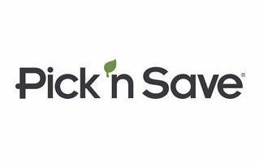

My Portfolio
Before coming to devCodeCamp I work in retail. I'm only 19 but I've had three jobs in retail already.
My first job was at Pick n' Save the grocery store. I was there for only a month and decided to leave because the working conditons and the overall environment was horrible.
My second job was at OfficeMax, I was what they called a "Technology Specialst" and spent most of the time helping customers on either buying computer, fixing the computer, if they had questions on computers. I was pretty much like the utility guy at OfficeMax because even though I was in the tech department I also did cashier, print center, frieght, e.t.c.
My third job was at The Home Depot. I was called a flooring specialst in their business, I worked with customers who wanted new flooring. Since the Decor department was small the flooring team did that as well. I pretty much new a lot about tile, carpet, laminate, wood, carpet and window blinds. After 6 month there I decided it wasnt really worth it and came to devCodeCamp.